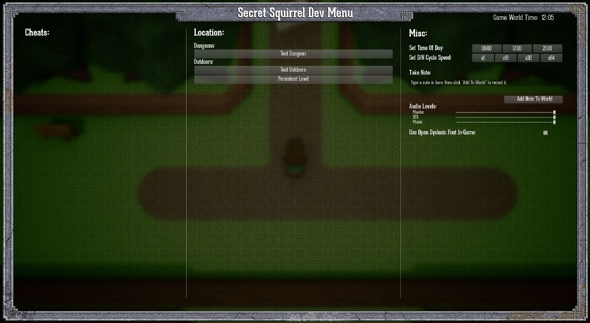

05 May 2018
…with caveats :D
Apologies, things have been quiet on here, which wasn’t intentional.
At the start of April I suffered abdominal pains that, over the course of 6 hours, ended up with me
having surgery for a suspected twisted intestine. I had the best possible outcomes from both the
surgery and the recuperation, but it’s meant the better part of four weeks not doing much at all (“recuperating”, or “boredom” as I like to think of it).
I’m back on my feet, in fact, bar some much needed core strengthening to repair the muscle that was cut open
I’d say I’m basically tip-top. Phew! So massive thanks to the Doctors and Nurses at Hki for their sterling work and humour. The physio was a bit harsh, though ;D
The next big change is that I’m moving back to the UK in June. Things are making their way into boxes, errands need to be run,
and my eye is not really on my work. Again. But this shouldn’t take too long, or be too painful.
Once that’s out of the way I’m also thinking of doing more on Mixer/Twitch (and maybe You Tube), so my work is a little more visible. I love writing blog posts
but people don’t like reading them any more. That’s not to say this blog is going to die. It’s not. Some topics will deserve more detail than a video will allow so
you can still expect updates here, I’ve just not made up my mind how frequently, or what sort of content will be best.
That’s a long winded way of apologising for the lack of updates this month, and for the lack of updates in the month to come. But I’ll be back soon :)
24 Mar 2018

Over the last few weeks I’ve been teaching 2nd year game programming students the basics of Unity3D shader programming. Last week
this culminated in the class making a simple Surface Shader for water, which I’ve – shamelessly – tried to get close to Zelda: Wind Waker. Because.
Since stylised water effects are always in vogue, I figure this might be useful to other people.
I’ve exposed all the parameters, but it’s a stupidly simple shader that you should have no problem bending to your needs.
The GitHub repo is here: https://github.com/TripleEh/StylisedWater_SurfaceShader/
Enjoy!
07 Mar 2018
You know what it’s like, you’re building something in-engine and you need to make a note of something — a TODO, or random idea — and your notepad isn’t to hand.
I went through a couple of notepads while making Lumo, as well as having a Remember The Milk list of TODOs and “wouldn’t it be funny ” ideas (most of which I actually managed to get through) but this requires a certain level of rigour. I had to constantly remind myself to go back and curate, lest I forget something. To this day I still have a niggling feeling that I let some good ideas slip…
I’ve been on the hunt for a better way of managing this, well, ever since I joined the industry, so I’ve tried various methodologies, mind-maps, Trello boards, Jira projects, and all the usual project management wank that, frankly, is just overkill for what is, essentially, a conversation with myself.
And then I remembered this:
Fucking. Genius.
I’ve worked on projects with levels of automation before — screenshots in the bug database that embed camera co-ords (and/or other information) that you could double click to launch the build in the correct location — but Nintendo have gone to the logical extreme. They’ve integrated their project management processes directly into their game-world. And that’s lush. Perfect, in fact.
So how much of this would I need, working on my own?
Well, technically, not much. The first pass could literally be a sticky note. A gentle reminder, in-game, to do something, that I can edit and delete as I play-test. For this I’d only need:
- A text entry box (that only appears in development builds)
- Mapped to some sort of joypad input (to show & hide it)
- A way to save the current position, along with whatever text was entered
- Some modifications to the GameMode, to load this information and spawn Actors during start-up
- A way to delete notes
- I’d also like to keep this information human readable, just in case I want to review notes outside of the game
Implementing
One of the mistakes I made with Lumo was relying on the Unity Inspector as the primary interface to the game’s state and “cheats”. This meant that I had to tick a bunch of boxes before letting the splash screen jump to the correct room, which became more than a little tedious by the end. One of the first things I did in LB was knock up a custom Dev UI to avoid this, so I already had the perfect place to add a text-entry box:

One pattern I’ve fallen into recently is using the Game Instance as my “Game Globals”. Rather than do a lot of GetX and casting — which is just as tedious in Blueprints as it is in code — I’ll store pointers to things I might need from several places in the Game Instance, or add simple Get/Set functions.
Storing the Note is an example of this. The Game Instance knows about the static functions that do the dirty work, and exposes a simple “Add” / “Remove” pair of methods to Blueprints.
[I tend to do most of my UI work in Blueprints now, primarily as they’re able to delay, which is handy when things are animating.]
JSon
Because I want the notes to be human readable, XML and Json immediately spring to mind. It seemed like a reasonable bet that one of these was implemented by UE4 and it turns out that Json is available by adding Json and JsonUtilities to your Build.cs file:
PublicDependencyModuleNames.AddRange(new string[] { ... "Json", "JsonUtilities" });
There’s not a lot of documentation regarding Json, at least that I could find, but fortunately its use is scattered throughout the code-base. The simplest method that I’ve found looks like like this.
// Create a root JSon object that'll hold all the sub sections
TSharedRef<FJsonObject> RootJson = MakeShareable(new FJsonObject);
// Output the contents of the DevNotes arrays
{
for (int i = 0; i < m_aNoteContents.Num(); ++i)
{
TSharedRef<FJsonObject> SubJson = MakeShareable(new FJsonObject);
SubJson->SetNumberField(TEXT("X"), m_aNotePositions[i].X);
SubJson->SetNumberField(TEXT("Y"), m_aNotePositions[i].Y);
SubJson->SetNumberField(TEXT("Z"), m_aNotePositions[i].Z);
SubJson->SetStringField(TEXT("Note"), *m_aNoteContents[i]);
RootJson->SetObjectField(FString::Printf(TEXT("Note_%d"), i), SubJson);
}
}
// Output the built string to file
{
FString OutputStr;
TSharedRef<TJsonWriter<>> Writer = TJsonWriterFactory<>::Create(&OutputStr);
FJsonSerializer::Serialize(RootJson, Writer);
FString sFullPath = FPaths::ProjectSavedDir() + _sDevNotesFilename;
FFileHelper::SaveStringToFile(OutputStr, *sFullPath);
}
First we need to build the root of the Json document (RootJson) as this acts as the holder for the sub-objects that contain the actual data.
With that, we can then iterate over whatever data we wish to export. The Json format is just a collection of name-value pairs (Bool, String, Number…) which sit inside a pair of curly braces. Because of this, each note — which contains the position and text that I entered — needs to go in it’s own Json object, which is then added to RootJson.
Once we’ve parsed our data and built our Json we then need to serialise it out to a file, which we do by getting its string representation. This is achieved through TJsonWriter and FJsonSerializer. TJsonWriterFactory is templated to accept a printing policy when outputting to a string, but I’ve ignored that as the default is perfectly readable.
[You’ll note from the code example that I’m currently saving to the game’s “Save Game” directory. This may have to change in the future as the contents of this directory don’t get packaged up with the build. But the notes are just reminders to self…]
Loading the JSon is also dead simple, as it largely mirrors the creation process:
FString sFullPath = FPaths::ProjectSavedDir() + _sDevNotesFilename;
if (FPlatformFileManager::Get().GetPlatformFile().FileExists(*sFullPath))
{
UDbg::LOG_INFO("UDevNote::Init: Found Dev Notes Json File");
FString FileString;
FFileHelper::LoadFileToString(FileString, *sFullPath);
TSharedPtr<FJsonObject> RootJson = NULL;
TSharedRef<TJsonReader<>> JsonReader = TJsonReaderFactory<>::Create(FileString);
if (FJsonSerializer::Deserialize(JsonReader, RootJson))
{
for (int i = 0;; ++i)
{
const TSharedPtr<FJsonObject>* pObjectTest = nullptr;
if (!RootJson->TryGetObjectField(FString::Printf(TEXT("Note_%d"), i),pObjectTest))
break;
FJsonObject* SubJson = pObjectTest->Get();
FVector vPos = FVector(SubJson->GetNumberField(TEXT("X")), SubJson->GetNumberField(TEXT("Y")), SubJson->GetNumberField(TEXT("Z")));
FString sNote = SubJson->GetStringField(TEXT("Note"));
m_aNoteContents.Emplace(sNote);
m_aNotePositions.Emplace(vPos);
}
}
}
Game Framework Classes
Now that I have the ability to export notes from the UI (and reload them) I just need to be able to spawn a representation into the world. I’ve opted to create a DevNote actor class, and then add a pointer to the derived Blueprint instance to my Game Mode.
During BeginPlay() — in UE_BUILD_DEVELOPMENT configurations — the Game Mode checks that the Blueprint has been set, asks the Game Instance to check for Dev Notes, and then iterates over any, spawning an actor into the world for each.
This actor stores the text of the Dev Note so it can be passed to the dialog system.
Viewing Dev Note
The Dev Note acts in the same way as other interactables — things like sign posts, or NPCs that have a message to pass to the player — by flashing up a button to press when the player enters a trigger area.
If the player (me) interacts, the Dev Note text is passed to the dialog system, which pops up the appropriate UI.
I’ll maybe write-up the Dialog System in a later blog post.
Where Next?
I quite like this new toy so I’m already thinking of ways it could be more useful. Hooking it up to a Bug Database is an obvious thing to do, but I’d also like to be able to spit out QR codes that track the game’s state. With that I’d have a very handy tool that would completely eliminate the problem I faced with Lumo; jumping about the timeline and ensuring the game is in the correct state to replicate issues and do repeatable tests.
Anyway, it was a fun little aside, so maybe you’ll find it useful. :)
20 Jan 2018
A Day/Night cycle can be a bit of a double edged sword. On the plus side it gives you the freedom to demarcate events into time periods — “they mostly come at night. Mostly…” — and on the downside you have to make the environment look good in a range of different lighting setups. So it’s important to have some easy controls.
I’ve flip-flopped on whether to include a day/night cycle in my new project for a while. I’m not at the point where the game is looking good in any setup, so making things harder from the start might not be the best decision. But, I do want to have night-time specific events, and having drowned myself in Breath Of The Wild over the last few months it’s clear that having a cycle, even if simple, does add to the sense of “place”. The player gets to see the world evolve, even in small ways, over time, and that’s good.
Before I begin explaining my simple implementation, let me point you at this series of videos from Kleiner Baer. He’s implemented an awesome Day/Night cycle that not only takes into account the long/lat of your game-world, but also the calendar seasons. I spent a day implementing it when I first considered adding Day/Night to my game, and it’s great, but not quite what I wanted…
So what does my system need to do?
- I’ll need to be able to set the time of day, for obvious reasons.
- I’ll need to be able to get the time of day, as the Player will no doubt need it in a UI somewhere.
- I want control over the length of my shadows. This means doing more than a simple slow, continuous rotation of the Sun and Moon. I want short mid-day shadows, and longer shadows at dawn/dusk, that project at specific angles. I’m trying flatter the top-down view of the world.
- I don’t want black shadows, so I’m going to have to use a Sky Light to help lift them up, which means I’ll need to continuously update both the intensity of the Sky Light, and it’s colour.
- I’ll need the same control for the colour and intensity of the Sun and Moon…
Because I’m a top down game I don’t need:
- The Sun or Moon to be visible in the sky, or move across the sky correctly.
This simplifies things.
My controller therefore needs: two directional lights (Sun and Moon), a Sky Light to help with the shadows, and a value to track the time.
The first thing to do is decide how to handle the time. I don’t want to be fiddling around with minutes / seconds — why do the maths when you can avoid it? — so given I only want hours I can track this with a single float, that works as a 24 hour clock:
- 0.9f == 9pm
- 1.2f == Noon
- 2.1f == 9pm
Etc.
Updating the time is simple:
fCurrentGameTime += DeltaTime * (2.4f / fLengthOfDayInSeconds);
which I can do in my DayNightController’s Tick function. Bob’s your mother’s brother.
(If I want minutes, say for the UI, I can get them by multiplying fCurrentGameTime by 10, and then pulling out the fractional part of the resulting float. This is the percentage of an “hour”, so:
(fFract*100.0f) * 0.59f
will give me a screen-printable value, and I’ll just ignore seconds…)
So the main thing about this implementation is having control over colour and light intensity. I could just lerp between known-good values, say for morning, noon and night, but a far better way would be to use Curves.
UE4, handily, has an editable curve system for float, vector and colour values — exactly what’s needed here — and one of their big benefits is that you can edit them and see your changes reflected during PIE. This is perfect for me, as I’ll be fiddling with these curves until the day the game is released.
The Curve editor is fairly basic, but it does the job. For my system I need curves that go from 0.0 to 2.4f, which I pull-out using fCurrentGameTime as the index.

This is the curve for the colour of the Sun’s light during the course of the day. Atm I’m staying quite blue in the morning and blending to a very orange/red sunset in the evening, but this will be tweaked a million more times…
The angle of the sun’s light is done in a similar way:

Editing the Y value in this graph is what allows me to have very small shadows at mid-day and longer ones at dusk/dawn. Very tweakable.
So the class setup becomes:

And putting all this together, the Tick function looks like:

As the title says: Super. Simple.
There’re a couple of gotchas with this, at least for me.
- You need some sensible defaults, otherwise everything is going to be waaaay too bright when you drop a derived Blueprint into the world.
- Moveable Sky Lights will apply distance field AO by default, and that’s not something I’m after right now. It looks a little weird with my top-down view, but I may go back and tweak this later. Setting the Sky Light to Stationary disables this.
- Because my game is top-down I don’t need a sky box. Passing in a specific Cube map (all white) to the Sky Light makes it a little cheaper and gives better colour control. (Hat-tip to Mr Large for that factoid.)
So you’ll want to setup some sane values in the constructor. You’ll probably want to play around with a couple of lights in the editor first and work out how you want the shadows to appear, as well. There’re a lot of settings to toy with depending on the look you’re after.
The end result, before I spend the next several years tweaking it, is pretty good.

06 Jan 2018
Good camera implementations in games are super interesting, often hiding a lot of subtlety from the player in order to present the best view of the action. Don’t believe me? Check out this quick run-down of some of the camera-modes in Super Mario World.
Since cameras are good sport to figure out (and a few of my students have asked recently), I thought I’d quickly talk about what I’ve been doing with mine. It’s probably worth mentioning that this is pretty simple, so this write-up is unlikely to contain any surprises for the seasoned dev. Hopefully it’ll still be useful if you’re just starting to think about this stuff, though.
What Does My Camera Need To Do?
The inspiration for my current project is obviously the early Zelda games, but Link Between Worlds on the 3DS is probably the best thing to compare against, as it’s 3D and on “modern” hardware.
Zelda-type camera implementations have discreet modes depending on what the player is doing / what type of gameplay is in the area. You can roughly list the main ones as:
- Free Follow: The camera will track ground height and try to move in front of the player’s direction of travel so they have a better view of what’s in front of them.
- Locked Follow: Similar to free, except ground-height will be ignored. Think of dungeon rooms with multi-height platforms… the camera’s height may or may not be fixed in these locations, depending on gameplay. But most commonly it’s fixed to one height.
Both of these modes can be restricted to an area. IE: the camera movement will be clamped to predetermined bounds. This is most obvious in the Dungeons where you transition between rooms — the camera doesn’t show you the next room until you go through a door — but the same happens in outdoor areas. You’ll often transition (with a forced scroll) from a wooded area to a “village” or some such. I’ll be doing the same thing in my game to cover up the level streaming between outdoor zones.
- Focus: Player has interacted with an object, and/or a conversation is happening, so the camera moves the focal point away from the centre of the screen to an area above the dialog box. Or, tracks back from its leading position to re-focus on the player.
- Combat: Similar to Focus, but tracking the player and the object they’ve locked on to, with priority given to the locked-target’s location.
- D-Pad Override: In the follow modes — and possibly combat, I’d need to check — the player can manually move the camera using the D-Pad, but it will bounce back when they let go. This is also bounds restricted, depending on location.
You can also argue that the transitions in and out of these modes are also discreet states that require handling (and they will, in code), but for simplicity I’m going to skip over those here.
My first pass at writing this camera system was to break down the camera logic into a state machine, roughly along the lines above, and start building functionality. This was a mistake. It lead me down the path of writing each discreet camera mode as its own, “sub-”state machine, which just overly complicated everything.
I quickly threw that away and started again with the simplest state:
Free Follow
The major thing we want here is to “lead” the player — to make sure that the camera gets in front of the player in order to show them more of where they’re heading. This means:
- The camera needs to be able to move faster than the player (so a tweakable is getting exposed here)
- The distance the camera can get ahead of the player needs to be defined (another tweakable) and observed.
- The camera needs to know which direction the player character is traveling.
Note that third point. We don’t want to know what the character in the world is doing, we want to know the player’s intention.
If the camera is attached, in some way, to the rotation of the character in the world then this will probably feel laggy. The character isn’t going to “flip” from one direction to the next, instantly. Instead it’s (most likely) going to rotate over a few frames to look smoother on the eye. This smoothing is acceptable in terms of moving the character, but it’ll make the camera do long, slow arcs, as it follows the rotation. This will probably look wrong, and definitely feel weird.
Getting the player’s intention is as simple as reading the current stick input. This gives us a direction vector, which we can normalise, and then multiply out by any distance we want. The result of this — when added to the player’s current position — is a new, “wanted” position, with no other considerations taken into account.
If you imagine a circle of such wanted positions — one for each direction the player could be heading in, centered around the player — then this ring represents the limits of where the camera can move when it’s leading the player:
To move the camera from its current position to our new “wanted” position, we need to work out the trajectory to move along. We’re not going to jump to the outer ring in one go, but rather in a series of small steps.
We can do this by subtracting the wanted position from the camera’s current position, which gives us a directional vector between the two locations.
To move along this direction vector, we normalise it, multiply it by: (camera’s movement speed * DeltaTime) and then add the result to the camera’s current location. This gives us an intended “final position”.

Yup, we’ve made a really slow homing missile. Simples.
Now we have the “final position” all that’s left is the conditional stuff:
If the final position is too far away from the player (outside the ring we identified in the first step) then we need to limit it. One way is to check the Size() of the vector between the intended final position and the character, and use GetClampedToSize() to find the position on the outer ring, if it’s too long.
If we’re going to track the ground height, then we need to make a few choices. We could use a fixed height between the camera and the player character, but this feels a bit off to me when the character can jump.
We could just raycast from the camera’s position, down to the ground, and then fix our height based off that, but then we’re going to get lots of weird issues when the camera “falls off” a cliff that the player is looking out over.
So instead I opted to raycast down from the player character — ignoring whether they are jumping, or not — and finding the height of the ground directly underneath. The new camera height is just this, plus a fixed amount, but this may cause issues if there are areas in the world with very sharp inclines. In my case this isn’t a problem, I’m making the world and I’ll avoid doing this, but as a belts and braces thing I lerp between changes in height so it’ll always be smooth.
The last thing to think about is how to handle when the player has moved the left stick on the gamepad — giving us a new wanted position — but the player character is unable to move in the world, or the character is moving very slowly. As it stands the camera will continue to move toward its outer limits at a fixed speed, which (in my game) looks wrong.
The way I’ve opted to fix this is in the step where I calculate the trajectory between the camera’s current position and the new wanted position. Rather than multiplying this trajectory by: (camera’s movement speed * DeltaTime) I also take into account how much they’ve moved the stick on the gamepad, and how quickly the character is moving in the world. This looks a bit more like: (camera movement speed * (Stick Input * Speed of character in the world)) * DeltaTime
’ve not mentioned the bounds checking in any of this, as it’s simply a Clamp(). How you get the bounds into the camera system is down to you. I have an area controller which contains this data, and I grab it via the game mode.
There are other niceties we can think about that are down to personal taste:
- Maybe the camera will lerp back from a leading position to centre on the player character after a period of inactivity?
- Maybe there’s a small dead zone around the player, so not all movements force the camera to move?
- Maybe the camera moves faster when it’s behind the player, than it does when it’s in front? A sorta “catch-up” mode.
- Maybe the camera can take into account hot-spots in the world? Other NPCs, or parts of the environment could “attract” the camera’s wanted position, as it leads the player, to indicate clues or areas that might be worthy of attention.
There’s plenty of ways we can plus this…
Locked Follow
As you can guess, this isn’t really a special mode, it’s just deciding if we’re going to track ground height at any given point. We can do this with trigger areas in the world, or even at the game mode level. In my case I ended up making a sub-class of my camera specifically for dungeons, but mainly because I wanted to split out how I transition between rooms. On reflection, there was absolutely no need to do this.
Focus
In my game I remove control from the player when they’re in a conversation, so the main focus mode is simply a lerp to a focal point that’s either determined by the object that’s being interacted with, or the mid-point between the character and the NPC they are conversing with.
To make this look nicer, I use easing curves on the lerp.
When returning to follow (locked or free), I’ve not had to do anything. It actually looks better to have the camera move from where it is, rather than refocus on the player. I might change this in the future, though.
Combat
I’m not finished with combat at the minute, but the way I intend to do this is by modifying the camera’s wanted position to either be a point between the character and NPC, or on a circle around the NPC. Basically, I want the camera to focus on the thing the player is attacking, not the player’s character in the world, so biasing toward the NPC seems the way to go here. I’ll update this post once I’ve written it.
D-Pad Override
This is pretty simple. Any input from the D-Pad creates an additional direction vector which I add, as a final stage, to what we’ve calculated as the camera’s “final” follow position. Because the D-Pad is digital, I ramp the length of this vector up as the button is pressed, and down when it’s released, to smooth the additional movement. Just be careful to ramp the vertical and horizontal directions separately, to avoid weird results.
By clamping the length of D-Pad’s direction vector (which is inherent in how I ramp it up and down over time), nothing breaks by just adding it. Height is unaffected, but there could be a case where the camera clips against a cliff edge when pushed too far. Fortunately, my world isn’t tall enough for this to be a problem and I only let the player manually move the camera short distances.
This override is ignored in focus modes, as it’s not useful.
–
Bear in mind, this sort of follow cam may not be for you. I’m specifically emulating a Zelda-type implementation with the express desire to lead the player and frame important things in the best way, without manual control.
UE4 has a camera boom system which you can easily point straight down to avoid having to do any of this work, or even attach it to something that follows the character in the world, but in my opinion, it’ll not have some of the niceties that the player will feel even if they’re not aware of them.
The real magic is in that list of things we could do to plus this system (some of which are above), and how we transition between the camera’s discreet modes in a smooth and seamless way.
Which I’m leaving down to you :D